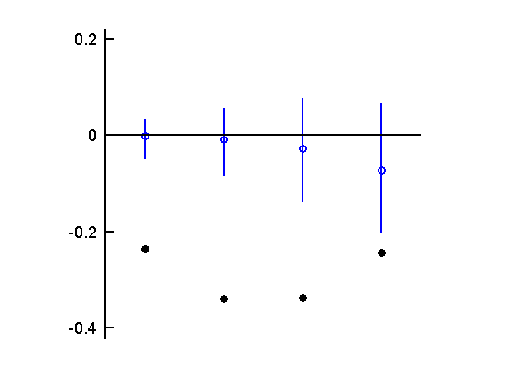
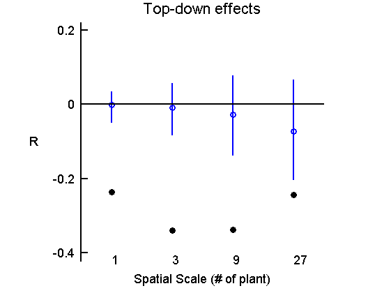
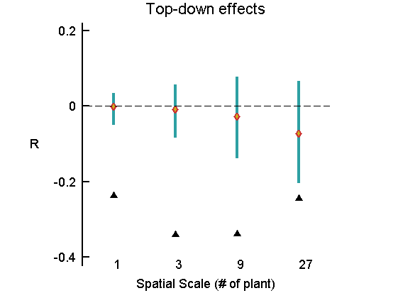
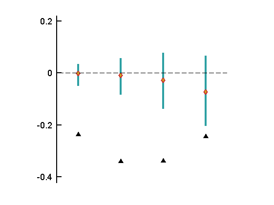
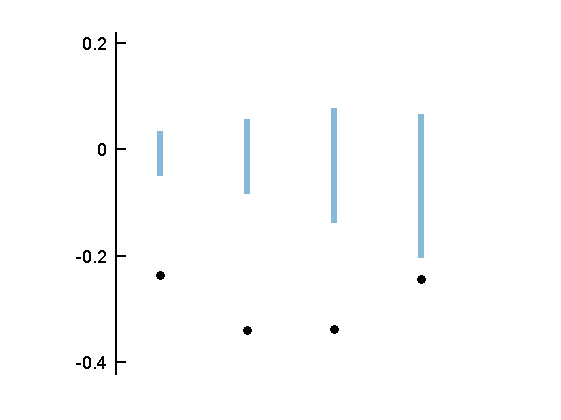

Example: how to use [myplot_CI]
This is an DEMO for my function [myplot_CI].
Wei-Ting Lin 2014/10/17
This file is formatted to be published.
Contents
Load example data
load Xdata_plot_ci
There are three variables in this data set.
- ci_TD : a 2x4 matrix, first row is the lower limit of confidence interval from null model
- TD : vector (length = 4) as the data points
- TD_ : vector (length = 4), the median of null model data
The data is from part of my research about spatial-scale dependent Top-Down/Bottom-up effects. TD is for Top-down effect. I'm interested in TD index at different spatial scale, CI values are produced by permutation 10,000 times, and mid-point are the medians.
Use default settings
myplot_CI(TD,ci_TD,TD_)
Change number of Y ticks
myplot_CI(TD,ci_TD,TD_,8)

Add text to the plot
Not all items in the structure need to be specified. If you don't want to show some text, just "comment off" the line.
Like this:
mytexts.ylabel = 'R'
mytexts=[]; mytexts.title ='Top-down effects'; mytexts.ylabel = 'R'; mytexts.xlabel = 'Spatial Scale (# of plant)'; mytexts.xmark = {'1','3','9','27'};
To used the default number of Y ticks, set it to 4
figure myplot_CI(TD,ci_TD,TD_,4,mytexts)
Change the styles
I listed all style objects that is changable, all are optional. Just comment off the unwanted ones.
To used color from my_colorplate, just un-comment the next line
load my_colorplates
and replace color code with mycolor(C,:), C is the number of color
mystyle=[]; % Lines for CI mystyle.limcolor = [ 0.1765 0.6275 0.6431]; % = mycolor(15,:); mystyle.limwidth = 3; % Marks for midpoint mystyle.midmarker = 'd'; mystyle.midcolor = [0.8000 0.2000 0.2000];% = mycolor(2,:); mystyle.midfacecolor = [ 0.8000 0.7000 0.1000];% mycolor(5,:); mystyle.midsize = 6 ; mystyle.midwidth = 2; % Marks for data points mystyle.datamarker = '*'; mystyle.datacolor = [0 0.2000 0.6000];% mycolor(3,:); mystyle.datafacecolor = [ 0.8000 0.7000 0.1000];% mycolor(5,:); mystyle.datasize = 8 ; mystyle.datawidth = 2; % Marks for significant data points mystyle.sigmarker = '^'; mystyle.sigcolor = [0.8000 0.2000 0.2000];% = mycolor(2,:); mystyle.sigfacecolor = [0.8000 0.2000 0.2000];% = mycolor(2,:); mystyle.sigsize = 10 ; mystyle.sigwidth = 2; % The Zero line mystyle.zeroplot = 1; % whether to plot the zero line mystyle.zerostyle ='--'; mystyle.zerocolor = 'k'; mystyle.zerowidth = 1;
Make the plot!
figure myplot_CI(TD,ci_TD,TD_,4,mytexts,mystyle)
Other examples
If you want to change the style but don't want any text
figure myplot_CI(TD,ci_TD,TD_,4,[],mystyle)
Make some change to style
- Don't want y = zero line
- Don't want midpoints
mystyle=[];
mystyle.limwidth = 5;
mystyle.limcolor= [0.5333 0.7216 0.8471]; % = mycolor(28,:);
mystyle.zeroplot = 0;
Plot
figure myplot_CI(TD,ci_TD,[],4,[],mystyle)